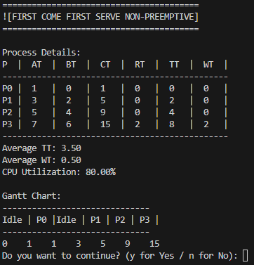
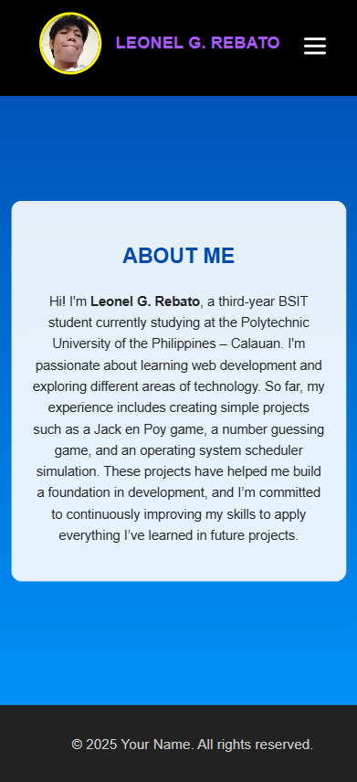

PROJECTS

CPU SCHEDULING
CPU scheduling is the process used by the operating system to decide which process or thread should be executed by the CPU
View Project
CSS IMAGES
The use of BG images, opacity, transparency and the use of filter effects. to create a basic image using css.
View Project

PERSONAL WEBSITE
A personal website created by an individual to showcase information about themselves.
View Project